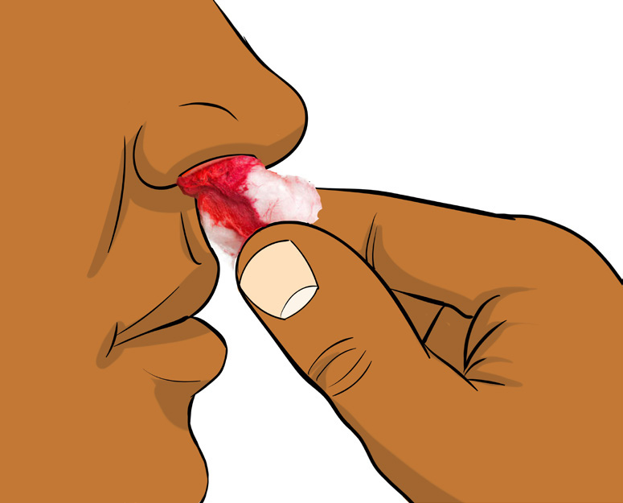

Muscle cramp
These are painful, spasmodic muscular contractions that happen suddenly and last for minutes to few hours. Muscle cramps occur during or immediately after exercise, as a result of absence of oxygen and mineral salts in a particular muscle or group of muscles. The treatment of a muscle cramp includes moderate stretching, massage, and drinking fluids such as water.
Nose bleeding

It is among the bleeding injuries that result from a direct blow such as being hit by another player or equipment. The assistance is given by putting a cotton wool inside the nostrils and pinch the nose for a while (up to 20 minutes), then, clean the nostrils. If the bleeding continues seek for medical assistance immediately.
Figure 2.8: Nose bleeding
from List B.
List A List B
(i) Fracture (a) Repetitive jumping or running on hard surfaces
(ii) Overuse (b) O verstretching or tearing of the muscles in the
back of the thigh
(iii) Acute (c) Awkward landing or excessive force on the bone
(iv) Sprain (d) Twisting the foot during physical activity
(v) Strain (e) Sudden impact to the head
2. Identify other 5 injuries that are likely to occur in sports.
3. Group the following sport injuries: fracture, dislocation, abrasion, cuts and sprain into muscle injury, bone injury and joint injuries.